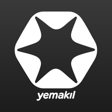
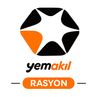
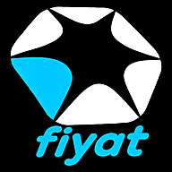
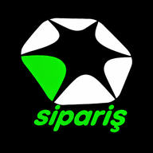

YemAkıl
v182
Üç program, tek yerde

Rasyon
Süt ve besi sığırı, koyun, buzağı rasyonu; sağlık ve aşı rehberi
›

Fiyatlar
Yem hammaddesi fiyatları: yurt içi borsalar ve dünya
›

Sipariş
Fabrika fiyat listeleri, cariler, WhatsApp sipariş mesajı
›